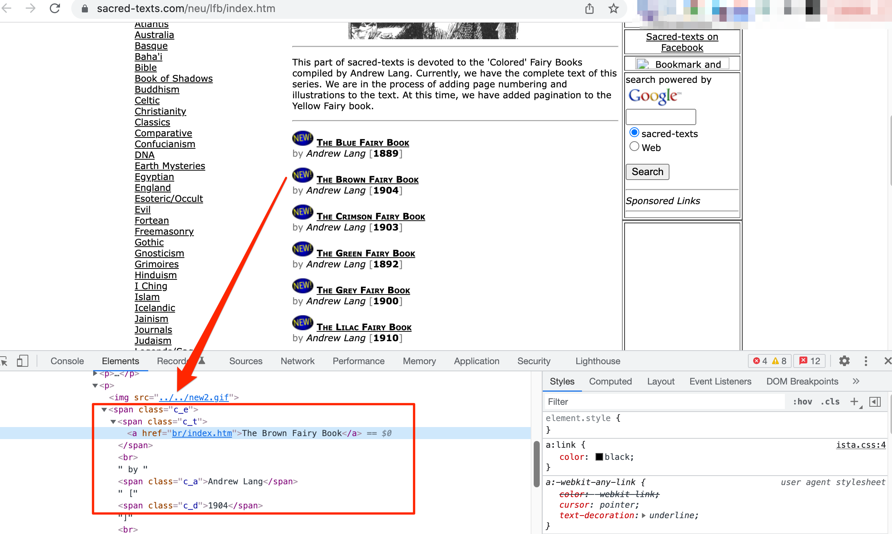

A Full Text Searchable Database of Lang’s Fairy Books
Contents
A Full Text Searchable Database of Lang’s Fairy Books#
In the late 19th and early 20th century, Andrew Lang published various collections of fairy tales, starting with The Blue Fairy Book and then progressing though various other colours to The Olive Fairy Book.
This notebook represents a playful aside in trying to build various searchable contexts over the stories.
The resulting search engine will support full text search over all the stories contained in all the coloured story books. This will allow us to retrieve stories based on words and phrases of the form that we might use when performing a web search.
To begin with, let’s start by ingesting the stories into a database and building a full text search over them.
Obtain Source Texts#
We can download the raw text for each of Lang’s coloured Fairy Books from the Sacred Texts website. The books are listed on a single index page:

Let’s start by importing some packages that can help us download pages from the Sacred Texts website in an efficient and straightforward way:
# These packages make it easy to download web pages so that we can work with them
import requests
# "Cacheing" pages mans grabbing a local copy of the page so we only need to download it once
import requests_cache
from datetime import timedelta
requests_cache.install_cache('web_cache',
backend='sqlite',
expire_after=timedelta(days=1000))
Given the index page URL, we can easily download the index page:
# Specify the URL of the page we want to download
url = "https://www.sacred-texts.com/neu/lfb/index.htm"
# And then grab the page
html = requests.get(url)
# Preview some of the raw web page / HTML text in the page we just downloaded
html.text[:1000]
'<HTML>\r\n<HEAD>\r\n<link rel="stylesheet" href="../../css/ista.css"><META HTTP-EQUIV="Content-Type" CONTENT="text/html; charset=UTF-8">\r\n<link rel="alternate" type="application/rss+xml" title="RSS" href="http://sacred-texts.com/rss/new.xml">\r\n\r\n<META name="description"\r\ncontent="Sacred Texts: Lang Fairy Books">\r\n<META name="keywords"\r\ncontent="Colored Fairy Books Fairy Tales Tale Folklore Folk lore Children Literature">\r\n<TITLE>Sacred-Texts: Lang Fairy Books</TITLE></HEAD>\r\n<BODY>\r\n<table width="800" border="0" align="center" cellpadding="0" cellspacing="0"><tr> \r\n<td height="131" width="200" align="left" valign="top"> \r\n<div align="left"><a href="../../cdshop/index.htm"><img src="../../img/cdad.gif" width="206" height="136" border="0"></a></div>\r\n</td>\r\n<td height="131" width="600" colspan="3"><div align="left"><img src="../../img/menu.jpg" width="600" height="134" usemap="#Map" border="0"><map name="Map"><area shape="rect" coords="33,5,552,78" href="../../index.htm" alt="sacred-texts.co'
By inspection of the HTML, we see the books are in span tag with a ista-content class. Digging further, we then notice the links are in c_t classed span elements. We can extract them using beautiful soup:
# The BeautifulSoup package provides a range of tools
# that help us work with the downloaded web page,
# such as extracting particular elements from it
from bs4 import BeautifulSoup
# The "soup" is a parsed and structured form of the page we downloaded
soup = BeautifulSoup(html.content, "html.parser")
# Find the span elements containing the links
items_ = soup.find("span", class_="ista-content").find_all("span", class_="c_t")
# Preview the first few extracted <span> elements
items_[:3]
[<span class="c_t"><a href="bl/index.htm">The Blue Fairy Book</a></span>,
<span class="c_t"><a href="br/index.htm">The Brown Fairy Book</a></span>,
<span class="c_t"><a href="cr/index.htm">The Crimson Fairy Book</a></span>]
Let’s grab just the anchor tags from there:
# The following construction is known as a "list comprehension"
# It generates a list of items (items contained in square brackets, [])
# from another list of items
items_ = [item.find("a") for item in items_]
items_
[<a href="bl/index.htm">The Blue Fairy Book</a>,
<a href="br/index.htm">The Brown Fairy Book</a>,
<a href="cr/index.htm">The Crimson Fairy Book</a>,
<a href="gn/index.htm">The Green Fairy Book</a>,
<a href="gy/index.htm">The Grey Fairy Book</a>,
<a href="li/index.htm">The Lilac Fairy Book</a>,
<a href="ol/index.htm">The Olive Fairy Book</a>,
<a href="or/index.htm">The Orange Fairy Book</a>,
<a href="pi/index.htm">The Pink Fairy Book</a>,
<a href="re/index.htm">The Red Fairy Book</a>,
<a href="vi/index.htm">The Violet Fairy Book</a>,
<a href="ye/index.htm">The Yellow Fairy Book</a>]
List Comprehensions
List comprehensions provide a concise form for defining one list structure based on the contents of another (or more generally, any iterable).
In an expanded form, we might create one list from another using a loop of the form:
new_list = []
for item in items:
new_list.append( process(items) )
In a list comprehension, we might write:
new_list = [item for item in items]
The links are relative links, which means we need to resolve them relative to the path of the current page.
Obtain the path to the current page:
# Strip the "index.htm" element from the URL to give a "base" URL
base_url = url.replace("index.htm", "")
Extract the link text (link.text) and relative links (link.get('href')) from the <a> tags and use a Pyhton f-string to generate full links for each book page (f"{base_url}{link.get('href')}"):
links = [(link.text, f"{base_url}{link.get('href')}") for link in items_]
# Display some annotated output to see what's going on
print(f"Base URL: {base_url}\nExample links: {links[:3]}")
Base URL: https://www.sacred-texts.com/neu/lfb/
Example links: [('The Blue Fairy Book', 'https://www.sacred-texts.com/neu/lfb/bl/index.htm'), ('The Brown Fairy Book', 'https://www.sacred-texts.com/neu/lfb/br/index.htm'), ('The Crimson Fairy Book', 'https://www.sacred-texts.com/neu/lfb/cr/index.htm')]
Python f-strings
Python’s f-strings (formatted string literals, PEP 498) are strings prefixed with an f character. The strings contain “replacement fields” of code contained within curly braces. The contents of the curly braces are evaluated and included in the returned string.
We can also grab the publication year for each work:
years_ = soup.find("span", class_="ista-content").find_all("span", class_="c_d")
years = [year.text for year in years_]
And merge those in to a metadata record collection:
sacred_metadata = list(zip(links, years))
sacred_metadata[:3]
[(('The Blue Fairy Book', 'https://www.sacred-texts.com/neu/lfb/bl/index.htm'),
'1889'),
(('The Brown Fairy Book',
'https://www.sacred-texts.com/neu/lfb/br/index.htm'),
'1904'),
(('The Crimson Fairy Book',
'https://www.sacred-texts.com/neu/lfb/cr/index.htm'),
'1903')]
We could now load each of those pages and then scrape the download link. But, we notice that the download links have a regular pattern: https://www.sacred-texts.com/neu/lfb/bl/blfb.txt.gz which we can derive from the book pages:
download_links = []
for (_title, _url) in links:
# We need to get the "short" colour name of the book
# which can be found in the URL path...
book_path = _url.split("/")[-2]
zip_fn = f"{book_path}fb.txt.gz"
zip_url = _url.replace("index.htm", zip_fn)
download_links.append((_title, zip_url))
download_links[:3]
[('The Blue Fairy Book',
'https://www.sacred-texts.com/neu/lfb/bl/blfb.txt.gz'),
('The Brown Fairy Book',
'https://www.sacred-texts.com/neu/lfb/br/brfb.txt.gz'),
('The Crimson Fairy Book',
'https://www.sacred-texts.com/neu/lfb/cr/crfb.txt.gz')]
Now we can download and unzip the files…
import urllib
for (_, url) in download_links:
# Create a file name to save file to as the file downloaded from the URL
zip_file = url.split("/")[-1]
urllib.request.urlretrieve(url, zip_file)
!ls
Ashliman_folk_texts_scraper.ipynb
DBPedia_Aarne-Thompson-Uther_Search.ipynb
Duncan_Williamson_Tobar_Audio.ipynb
Jacobs' Fairy Tales.ipynb
LICENSE
Lang_Doc2Vec.ipynb
MFTD-Multilingual_Folk_Tale_Database.ipynb
Missouri_Tale_Types.ipynb
Notes and Queries DB-ORIGI.ipynb
Notes_and_Queries_DB.ipynb
Notes_and_Queries_DB_JUNK.ipynb
Notes_and_Queries_DB_PART_2.ipynb
Notes_and_Queries_DB_PART_3.ipynb
Notes_and_Queries_DB_PART_4.ipynb
Notes_and_Queries_DB_PART_5.ipynb
README.md
SOSS_007913_060155.mp4
Story db search examples.ipynb
Thompson_Motif_Index.ipynb
_build
_config.yml
_content
_toc.yml
ashliman_demo.db
audio
betsy_whyte_audio.csv
blfb.txt.gz
brfb.txt.gz
crfb.txt.gz
demo.db
docs
duncan_williamson_audio.csv
full_nq.db
full_nqXX.db
full_nq_backup.db
gnfb.txt.gz
gyfb.txt.gz
how-to-read-this-book.ipynb
ia-downloads
ia_iw_books_metadata.csv
ia_utils
images
isle_wight_historical_books_db.ipynb
lang-fairy-books-db.ipynb
lang-fairy-books-db_PART_2.ipynb
lang-fairy-books-db_PART_3.ipynb
lang-fairy-books-db_PART_4.ipynb
lang_fairy_tale.db
lang_model.gensim
lifb.txt.gz
motifs_demo.db
mtdf_demo.db
nandq_internet_archive.txt
notes_and_queries_big_index.pdf
nq_demo.db
nq_demoXX.db
old
olfb.txt.gz
orfb.txt.gz
pifb.txt.gz
preface.md
refb.txt.gz
requirements.txt
running-the-book-code.ipynb
tale_types_demo.db
test-page.pdf
thompson_motif_index.csv
tobar_cache.sqlite
vifb.txt.gz
web_cache.sqlite
whyte_audio.md
williamson_audio.md
yefb.txt.gz
The following function will read in the contents of a local gzip file:
import gzip
def gzip_txt(fn):
"""Open gzip file and extract text."""
with gzip.open(fn,'rb') as f:
txt = f.read().decode('UTF-8').replace("\r", "")
return txt
Let’s see how it works:
gzip_txt('gnfb.txt.gz')[:1000]
'\nThe Green Fairy Book, by Andrew Lang, [1892], at sacred-texts.com\n\nTHE GREEN FAIRY BOOK\n\nBy Various\n\nEdited by Andrew Lang\n\nLondon, New York: Longmans, Green, and Co.\n\n[1892]\n\nTo\n\nStella Margaret Alleyne\n\nthe\n\nGreen Fairy Book\n\nis dedicated\n\nThe Green Fairy Book, by Andrew Lang, [1892], at sacred-texts.com\n\nContents\n\n[*To the Friendly Reader]\n\n[*The Blue Bird]\n\n[*The Half-Chick]\n\n[*The Story of Caliph Stork]\n\n[*The Enchanted Watch]\n\n[*Rosanella]\n\n[*Sylvain and Jocosa]\n\n[*Fairy Gifts]\n\n[*Prince Narcissus and the Princess Potentilla]\n\n[*Prince Featherhead and the Princess Celandine]\n\n[*The Three Little Pigs]\n\n[*Heart of Ice]\n\n[*The Enchanted Ring]\n\n[*The Snuff-box]\n\n[*The Golden Blackbird]\n\n[*The Little Soldier]\n\n[*The Magic Swan]\n\n[*The Dirty Shepherdess]\n\n[*The Enchanted Snake]\n\n[*The Biter Bit]\n\n[*King Kojata]\n\n[*Prince Fickle and Fair Helena]\n\n[*Puddocky]\n\n[*The Story of Hok Lee and the Dwarfs]\n\n[*The Story of the Three Bears]\n\n[*Prince Vivien and the Princess Placida]\n\n[*Little One'
# The !ls command is a Linux command to list the files in the current directory
!ls
Ashliman_folk_texts_scraper.ipynb
DBPedia_Aarne-Thompson-Uther_Search.ipynb
Duncan_Williamson_Tobar_Audio.ipynb
Jacobs' Fairy Tales.ipynb
LICENSE
Lang_Doc2Vec.ipynb
MFTD-Multilingual_Folk_Tale_Database.ipynb
Missouri_Tale_Types.ipynb
Notes and Queries DB-ORIGI.ipynb
Notes_and_Queries_DB.ipynb
Notes_and_Queries_DB_JUNK.ipynb
Notes_and_Queries_DB_PART_2.ipynb
Notes_and_Queries_DB_PART_3.ipynb
Notes_and_Queries_DB_PART_4.ipynb
Notes_and_Queries_DB_PART_5.ipynb
README.md
SOSS_007913_060155.mp4
Story db search examples.ipynb
Thompson_Motif_Index.ipynb
_build
_config.yml
_content
_toc.yml
ashliman_demo.db
audio
betsy_whyte_audio.csv
blfb.txt.gz
brfb.txt.gz
crfb.txt.gz
demo.db
docs
duncan_williamson_audio.csv
full_nq.db
full_nqXX.db
full_nq_backup.db
gnfb.txt.gz
gyfb.txt.gz
how-to-read-this-book.ipynb
ia-downloads
ia_iw_books_metadata.csv
ia_utils
images
isle_wight_historical_books_db.ipynb
lang-fairy-books-db.ipynb
lang-fairy-books-db_PART_2.ipynb
lang-fairy-books-db_PART_3.ipynb
lang-fairy-books-db_PART_4.ipynb
lang_fairy_tale.db
lang_model.gensim
lifb.txt.gz
motifs_demo.db
mtdf_demo.db
nandq_internet_archive.txt
notes_and_queries_big_index.pdf
nq_demo.db
nq_demoXX.db
old
olfb.txt.gz
orfb.txt.gz
pifb.txt.gz
preface.md
refb.txt.gz
requirements.txt
running-the-book-code.ipynb
tale_types_demo.db
test-page.pdf
thompson_motif_index.csv
tobar_cache.sqlite
vifb.txt.gz
web_cache.sqlite
whyte_audio.md
williamson_audio.md
yefb.txt.gz
Select one of the books and read in the book text:
txt = gzip_txt('blfb.txt.gz')
# Preview the first 1500 characters
txt[:1500]
'\nThe Blue Fairy Book, by Andrew Lang, [1889], at sacred-texts.com\n\nTHE BLUE FAIRY BOOK\n\nby Andrew Lang\n\nLondon, New York: Longmans, Green\n\n[1889]\n\nThe Blue Fairy Book, by Andrew Lang, [1889], at sacred-texts.com\n\nCONTENTS\n\n[*THE BRONZE RING]\n\n[*PRINCE HYACINTH AND THE DEAR LITTLE PRINCESS]\n\n[*EAST OF THE SUN AND WEST OF THE MOON]\n\n[*THE YELLOW DWARF]\n\n[*LITTLE RED RIDING-HOOD]\n\n[*THE SLEEPING BEAUTY IN THE WOOD]\n\n[*CINDERELLA; OR, THE LITTLE GLASS SLIPPER]\n\n[*ALADDIN AND THE WONDERFUL LAMP]\n\n[*THE TALE OF A YOUTH WHO SET OUT TO LEARN WHAT FEAR WAS]\n\n[*RUMPELSTILTZKIN]\n\n[*BEAUTY AND THE BEAST]\n\n[*THE MASTER-MAID]\n\n[*WHY THE SEA IS SALT]\n\n[*THE MASTER CAT; OR, PUSS IN BOOTS]\n\n[*FELICIA AND THE POT OF PINKS]\n\n[*THE WHITE CAT]\n\n[*THE WATER-LILY. THE GOLD-SPINNERS]\n\n[*THE TERRIBLE HEAD]\n\n[*THE STORY OF PRETTY GOLDILOCKS]\n\n[*THE HISTORY OF WHITTINGTON]\n\n[*THE WONDERFUL SHEEP]\n\n[*LITTLE THUMB]\n\n[*THE FORTY THIEVES]\n\n[*HANSEL AND GRETTEL]\n\n[*SNOW-WHITE AND ROSE-RED]\n\n[*THE GOOSE-GIRL]\n\n[*TOADS AND DIAMONDS]\n\n[*PRINCE DARLING]\n\n[*BLUE BEARD]\n\n[*TRUSTY JOHN]\n\n[*THE BRAVE LITTLE TAILOR]\n\n[*A VOYAGE TO LILLIPUT]\n\n[*THE PRINCESS ON THE GLASS HILL]\n\n[*THE STORY OF PRINCE AHMED AND THE FAIRY PARIBANOU]\n\n[*THE HISTORY OF JACK THE GIANT-KILLER]\n\n[*THE BLACK BULL OF NORROWAY]\n\n[*THE RED ETIN]\n\nThe Blue Fairy Book, by Andrew Lang, [1889], at sacred-texts.com\n\n[f01]\n\nTHE BRONZE RING\n\nOnce upon a time in a certain country there lived a king whose palace was surrounded by a spacious garden. But, t'
Extract Stories#
Having got the contents, let’s now extract all the stories.
Within each book, the stories are delimited by a pattern [fNN] (for digits N; which is to say, the letter f followed by two digits). We can use this pattern to split out the stories.
To do this, we’ll use the re regular expression package:
import re
We can now define a pattern against which we can split each file into separate chunks:
# Split the file into separate chunks delimited by the pattern: [fNN]
# the \d{2} expresssion says: look a digit (exactly 2 of them next to each other)
stories = re.split("\[f\d{2}\]", txt)
# Strip whitespace at start and end
stories = [s.strip("\n") for s in stories]
Extract the contents#
The contents appear in the first “story chunk” (index 0) in the text:
stories[0]
'The Blue Fairy Book, by Andrew Lang, [1889], at sacred-texts.com\n\nTHE BLUE FAIRY BOOK\n\nby Andrew Lang\n\nLondon, New York: Longmans, Green\n\n[1889]\n\nThe Blue Fairy Book, by Andrew Lang, [1889], at sacred-texts.com\n\nCONTENTS\n\n[*THE BRONZE RING]\n\n[*PRINCE HYACINTH AND THE DEAR LITTLE PRINCESS]\n\n[*EAST OF THE SUN AND WEST OF THE MOON]\n\n[*THE YELLOW DWARF]\n\n[*LITTLE RED RIDING-HOOD]\n\n[*THE SLEEPING BEAUTY IN THE WOOD]\n\n[*CINDERELLA; OR, THE LITTLE GLASS SLIPPER]\n\n[*ALADDIN AND THE WONDERFUL LAMP]\n\n[*THE TALE OF A YOUTH WHO SET OUT TO LEARN WHAT FEAR WAS]\n\n[*RUMPELSTILTZKIN]\n\n[*BEAUTY AND THE BEAST]\n\n[*THE MASTER-MAID]\n\n[*WHY THE SEA IS SALT]\n\n[*THE MASTER CAT; OR, PUSS IN BOOTS]\n\n[*FELICIA AND THE POT OF PINKS]\n\n[*THE WHITE CAT]\n\n[*THE WATER-LILY. THE GOLD-SPINNERS]\n\n[*THE TERRIBLE HEAD]\n\n[*THE STORY OF PRETTY GOLDILOCKS]\n\n[*THE HISTORY OF WHITTINGTON]\n\n[*THE WONDERFUL SHEEP]\n\n[*LITTLE THUMB]\n\n[*THE FORTY THIEVES]\n\n[*HANSEL AND GRETTEL]\n\n[*SNOW-WHITE AND ROSE-RED]\n\n[*THE GOOSE-GIRL]\n\n[*TOADS AND DIAMONDS]\n\n[*PRINCE DARLING]\n\n[*BLUE BEARD]\n\n[*TRUSTY JOHN]\n\n[*THE BRAVE LITTLE TAILOR]\n\n[*A VOYAGE TO LILLIPUT]\n\n[*THE PRINCESS ON THE GLASS HILL]\n\n[*THE STORY OF PRINCE AHMED AND THE FAIRY PARIBANOU]\n\n[*THE HISTORY OF JACK THE GIANT-KILLER]\n\n[*THE BLACK BULL OF NORROWAY]\n\n[*THE RED ETIN]\n\nThe Blue Fairy Book, by Andrew Lang, [1889], at sacred-texts.com'
Let’s pull out the book name:
# The name appears before the first comma
book = stories[0].split(",")[0]
book
'The Blue Fairy Book'
The Python parse package provides a simple way of matching patterns using syntax that resembles a string formatting template that could be used to create the strings being matched against.
import parse
We can alternatively is this package to extract the title against a template style pattern:
#The Blue Fairy Book, by Andrew Lang, [1889], at sacred-texts.com
metadata = parse.parse("{title}, by Andrew Lang, [{year}]{}, at sacred-texts.com", stories[0])
metadata["title"], metadata["year"]
('The Blue Fairy Book', '1889')
There are plenty of cribs to help us pull out the contents, although it may not be obviously clear with the early content items whether they are stories or not…
# There is a Contents header, but it may be cased...
# So split in a case insensitive way
boilerplate = re.split('(Contents|CONTENTS)', stories[0])
boilerplate
['The Blue Fairy Book, by Andrew Lang, [1889], at sacred-texts.com\n\nTHE BLUE FAIRY BOOK\n\nby Andrew Lang\n\nLondon, New York: Longmans, Green\n\n[1889]\n\nThe Blue Fairy Book, by Andrew Lang, [1889], at sacred-texts.com\n\n',
'CONTENTS',
'\n\n[*THE BRONZE RING]\n\n[*PRINCE HYACINTH AND THE DEAR LITTLE PRINCESS]\n\n[*EAST OF THE SUN AND WEST OF THE MOON]\n\n[*THE YELLOW DWARF]\n\n[*LITTLE RED RIDING-HOOD]\n\n[*THE SLEEPING BEAUTY IN THE WOOD]\n\n[*CINDERELLA; OR, THE LITTLE GLASS SLIPPER]\n\n[*ALADDIN AND THE WONDERFUL LAMP]\n\n[*THE TALE OF A YOUTH WHO SET OUT TO LEARN WHAT FEAR WAS]\n\n[*RUMPELSTILTZKIN]\n\n[*BEAUTY AND THE BEAST]\n\n[*THE MASTER-MAID]\n\n[*WHY THE SEA IS SALT]\n\n[*THE MASTER CAT; OR, PUSS IN BOOTS]\n\n[*FELICIA AND THE POT OF PINKS]\n\n[*THE WHITE CAT]\n\n[*THE WATER-LILY. THE GOLD-SPINNERS]\n\n[*THE TERRIBLE HEAD]\n\n[*THE STORY OF PRETTY GOLDILOCKS]\n\n[*THE HISTORY OF WHITTINGTON]\n\n[*THE WONDERFUL SHEEP]\n\n[*LITTLE THUMB]\n\n[*THE FORTY THIEVES]\n\n[*HANSEL AND GRETTEL]\n\n[*SNOW-WHITE AND ROSE-RED]\n\n[*THE GOOSE-GIRL]\n\n[*TOADS AND DIAMONDS]\n\n[*PRINCE DARLING]\n\n[*BLUE BEARD]\n\n[*TRUSTY JOHN]\n\n[*THE BRAVE LITTLE TAILOR]\n\n[*A VOYAGE TO LILLIPUT]\n\n[*THE PRINCESS ON THE GLASS HILL]\n\n[*THE STORY OF PRINCE AHMED AND THE FAIRY PARIBANOU]\n\n[*THE HISTORY OF JACK THE GIANT-KILLER]\n\n[*THE BLACK BULL OF NORROWAY]\n\n[*THE RED ETIN]\n\nThe Blue Fairy Book, by Andrew Lang, [1889], at sacred-texts.com']
# The name of the book repeats at the end of the content block
# So snip it out...
contents_ = boilerplate[-1].split(book)[0].strip("\n")
contents_
'[*THE BRONZE RING]\n\n[*PRINCE HYACINTH AND THE DEAR LITTLE PRINCESS]\n\n[*EAST OF THE SUN AND WEST OF THE MOON]\n\n[*THE YELLOW DWARF]\n\n[*LITTLE RED RIDING-HOOD]\n\n[*THE SLEEPING BEAUTY IN THE WOOD]\n\n[*CINDERELLA; OR, THE LITTLE GLASS SLIPPER]\n\n[*ALADDIN AND THE WONDERFUL LAMP]\n\n[*THE TALE OF A YOUTH WHO SET OUT TO LEARN WHAT FEAR WAS]\n\n[*RUMPELSTILTZKIN]\n\n[*BEAUTY AND THE BEAST]\n\n[*THE MASTER-MAID]\n\n[*WHY THE SEA IS SALT]\n\n[*THE MASTER CAT; OR, PUSS IN BOOTS]\n\n[*FELICIA AND THE POT OF PINKS]\n\n[*THE WHITE CAT]\n\n[*THE WATER-LILY. THE GOLD-SPINNERS]\n\n[*THE TERRIBLE HEAD]\n\n[*THE STORY OF PRETTY GOLDILOCKS]\n\n[*THE HISTORY OF WHITTINGTON]\n\n[*THE WONDERFUL SHEEP]\n\n[*LITTLE THUMB]\n\n[*THE FORTY THIEVES]\n\n[*HANSEL AND GRETTEL]\n\n[*SNOW-WHITE AND ROSE-RED]\n\n[*THE GOOSE-GIRL]\n\n[*TOADS AND DIAMONDS]\n\n[*PRINCE DARLING]\n\n[*BLUE BEARD]\n\n[*TRUSTY JOHN]\n\n[*THE BRAVE LITTLE TAILOR]\n\n[*A VOYAGE TO LILLIPUT]\n\n[*THE PRINCESS ON THE GLASS HILL]\n\n[*THE STORY OF PRINCE AHMED AND THE FAIRY PARIBANOU]\n\n[*THE HISTORY OF JACK THE GIANT-KILLER]\n\n[*THE BLACK BULL OF NORROWAY]\n\n[*THE RED ETIN]'
We note that contents_ contains a string with repeated end of line elements (\n\n) separating the titles in the form [*STORY TITLE] (for example, [*LITTLE RED RIDING-HOOD]).
We can parse out titles from the contents list based on the pattern delimiter [*EXTRACT THIS PATTERN]:
# Match against [* and ] and extract everything in between
contents = parse.findall("[*{}]", contents_)
The object that is returned is an iterator over all the things that the pattern matcher found that match the [*SOMETHING] patter, which is to say, a set of titles in block capitals.
We can iterate over these items, extracting the block capital titles and then casting them to a more readable title case format:
# The title text available as item.fixed[0]
# Also convert the title to title case
titles = [item.fixed[0].title() for item in contents]
titles
['The Bronze Ring',
'Prince Hyacinth And The Dear Little Princess',
'East Of The Sun And West Of The Moon',
'The Yellow Dwarf',
'Little Red Riding-Hood',
'The Sleeping Beauty In The Wood',
'Cinderella; Or, The Little Glass Slipper',
'Aladdin And The Wonderful Lamp',
'The Tale Of A Youth Who Set Out To Learn What Fear Was',
'Rumpelstiltzkin',
'Beauty And The Beast',
'The Master-Maid',
'Why The Sea Is Salt',
'The Master Cat; Or, Puss In Boots',
'Felicia And The Pot Of Pinks',
'The White Cat',
'The Water-Lily. The Gold-Spinners',
'The Terrible Head',
'The Story Of Pretty Goldilocks',
'The History Of Whittington',
'The Wonderful Sheep',
'Little Thumb',
'The Forty Thieves',
'Hansel And Grettel',
'Snow-White And Rose-Red',
'The Goose-Girl',
'Toads And Diamonds',
'Prince Darling',
'Blue Beard',
'Trusty John',
'The Brave Little Tailor',
'A Voyage To Lilliput',
'The Princess On The Glass Hill',
'The Story Of Prince Ahmed And The Fairy Paribanou',
'The History Of Jack The Giant-Killer',
'The Black Bull Of Norroway',
'The Red Etin']
This trick provides us with an easy way of identifying all the stories we have maaged to identify in, and extract from, the book.
Coping With Page Numbers#
There seems to be work in progress adding page numbers to books using a pattern of the form [p. ix], [p. 1], [p. 11] and so on.
For now, let’s create a regular expression substitution to remove those…
example = """[f01]
[p. ix]
THE YELLOW FAIRY BOOK
THE CAT AND THE MOUSE IN PARTNERSHIP
A cat had made acquaintance with a mouse, and had spoken so much of the great love and friendship she felt for her, that at last the Mouse consented to live in the same house with her, and to go shares in the housekeeping. 'But we must provide for the winter or else we shall suffer hunger,' said the Cat. 'You, little Mouse, cannot venture everywhere in case you run at last into a trap.' This good counsel was followed, and a little pot of fat was bought. But they did not know where to put it. At length, after long consultation, the Cat said, 'I know of no place where it could be better put than in the church. No one will trouble to take it away from there. We will hide it in a corner, and we won't touch it till we are in want.' So the little pot was placed in safety; but it was not long before the Cat had a great longing for it, and said to the Mouse, 'I wanted to tell you, little Mouse, that my cousin has a little son, white with brown spots, and she wants me to be godmother to it. Let me go out to-day, and do you take care of the house alone.'
[p. 1]
'Yes, go certainly,' replied the Mouse, 'and when you eat anything good, think of me; I should very much like a drop of the red christening wine.'
But it was all untrue. The Cat had no cousin, and had not been asked to be godmother. She went straight to the church, slunk to the little pot of fat, began to lick it, and licked the top off. Then she took a walk on the roofs of the town, looked at the view, stretched
[P. 22]
herself out in the sun, and licked her lips whenever she thought of the little pot of fat. As soon as it was evening she went home again.
"""
# Example of regex to remove page numbers
re.sub(r'\n*\[[pP]\. [^\]\s]*\]\n\n', '', example)
"[f01]THE YELLOW FAIRY BOOK\n\nTHE CAT AND THE MOUSE IN PARTNERSHIP\n\nA cat had made acquaintance with a mouse, and had spoken so much of the great love and friendship she felt for her, that at last the Mouse consented to live in the same house with her, and to go shares in the housekeeping. 'But we must provide for the winter or else we shall suffer hunger,' said the Cat. 'You, little Mouse, cannot venture everywhere in case you run at last into a trap.' This good counsel was followed, and a little pot of fat was bought. But they did not know where to put it. At length, after long consultation, the Cat said, 'I know of no place where it could be better put than in the church. No one will trouble to take it away from there. We will hide it in a corner, and we won't touch it till we are in want.' So the little pot was placed in safety; but it was not long before the Cat had a great longing for it, and said to the Mouse, 'I wanted to tell you, little Mouse, that my cousin has a little son, white with brown spots, and she wants me to be godmother to it. Let me go out to-day, and do you take care of the house alone.''Yes, go certainly,' replied the Mouse, 'and when you eat anything good, think of me; I should very much like a drop of the red christening wine.'\n\nBut it was all untrue. The Cat had no cousin, and had not been asked to be godmother. She went straight to the church, slunk to the little pot of fat, began to lick it, and licked the top off. Then she took a walk on the roofs of the town, looked at the view, stretchedherself out in the sun, and licked her lips whenever she thought of the little pot of fat. As soon as it was evening she went home again.\n"
Pulling the Parser Together#
Let’s create a function to parse the book for us by pulling together all the previous fragments:
def parse_book(txt):
"""Parse book from text."""
# Get story chunks
stories = re.split("\[f\d{2}\]", txt)
stories = [s.strip("\n") for s in stories]
# Get book name
book = stories[0].split(",")[0]
# Process contents
boilerplate = re.split('(Contents|CONTENTS)', stories[0])
# The name of the book repeats at the end of the content block
# So snip it out...
contents_ = boilerplate[-1].split(book)[0].strip("\n")
# Match against [* and ] and extract everything in between
contents = parse.findall("[*{}]", contents_)
# Get titles from contents
titles = [item.fixed[0].title() for item in contents]
# Get metadata
metadata = parse.parse("{title}, by Andrew Lang, [{year}]{}, at sacred-texts.com", stories[0]).named
return book, stories, titles, metadata
Create Simple Database Structure#
Let’s create a simple database structure and configure it for full text search.
We’ll use SQLite3 for the database. One of the easiest ways of working with SQLite3 databases is via the sqlite_utils package.
from sqlite_utils import Database
Specifiy the database filename (and optionally conntect to the database if it already exists):
db_name = "lang_fairy_tale.db"
# Uncomment the following lines to connect to a pre-existing database
#db = Database(db_name)
The following will create a new database (or overwrite a pre-existing one of the same name) and define the database tables we require.
Note that we also enable full text search on the book that creates an extra virtual table that supports full text search.
# Do not run this cell if your database already exists!
# While developing the script, recreate database each time...
db = Database(db_name, recreate=True)
# This schema has been evolved iteratively as I have identified structure
# that can be usefully mined...
db["books"].create({
"book": str,
"title": str,
"text": str,
"last_para": str, # sometimes contains provenance
"first_line": str, # maybe we want to review the openings, or create an index...
"provenance": str, # attempt at provenance
"chapter_order": int, # Sort order of stories in book
}, pk=("book", "title"))
db["books_metadata"].create({
"title": str,
"year": int
})
# Enable full text search
# This creates an extra virtual table (books_fts) to support the full text search
db["books"].enable_fts(["title", "text"], create_triggers=True)
<Table books (book, title, text, last_para, first_line, provenance, chapter_order)>
Build Database#
Let’s now create a function that can populate our database based on the contents of one of the books:
def extract_book_stories(db_tbl, book, stories, titles=None, quiet=False):
book_items = []
# The titles are from the contents list
# We will actually grab titles from the story
# but the titles grabbed from the contents can be passed in
# if we want to write a check against them.
# Note: there may be punctation differences in the title in the contents
# and the actual title in the text
for i, story in enumerate(stories[1:]):
# Remove the page numbers for now...
story = re.sub(r'\n*\[[pP]\. [^\]\s]*\]\n\n', '', story).strip("\n")
# Other cleaning
story = re.sub(r'\[\*\d+\s*\]', '', story)
# Get the title from the start of the story text
story_ = story.split("\n\n")
title_ = story_[0].strip()
# Force the title case variant of the title
title = title_.title().replace("'S", "'s")
# Optionally display the titles and the book
if not quiet:
print(f"{title} :: {book}")
# Reassemble the story
text = "\n\n".join(story_[1:])
# Clean out the name of the book if it is in the text
#The Green Fairy Book, by Andrew Lang, [1892], at sacred-texts.com
name_ignorecase = re.compile(f"{book}, by Andrew Lang, \[\d*\], at sacred-texts.com", re.IGNORECASE)
text = name_ignorecase.sub('', text).strip()
# Extract the first line then add the full stop back in.
first_line = text.split("\n")[0].split(".")[0] + "."
last_para = text.split("\n")[-1]
provenance_1 = parse.parse('[{}] {provenance}', last_para)
provenance_2 = parse.parse('[{provenance}]', last_para)
provenance_3 = parse.parse('({provenance})', last_para)
provenance_4 = {"provenance":last_para} if len(last_para.split())<7 else {} # Heuristic
provenance_ = provenance_1 or provenance_2 or provenance_3 or provenance_4
provenance = provenance_["provenance"] if provenance_ else ""
book_items.append({"book": book,
"title": title,
"text": text,
"last_para": last_para,
"first_line": first_line,
"provenance": provenance,
"chapter_order":i})
# The upsert means "add or replace"
db_tbl.upsert_all(book_items, pk=("book", "title" ))
We can add the data for a particular book by passing in the titles and stories:
book, stories, titles, metadata = parse_book(txt)
extract_book_stories(db["books"], book, stories)
The Bronze Ring :: The Blue Fairy Book
Prince Hyacinth And The Dear Little Princess :: The Blue Fairy Book
East Of The Sun And West Of The Moon :: The Blue Fairy Book
The Yellow Dwarf :: The Blue Fairy Book
Little Red Riding Hood :: The Blue Fairy Book
The Sleeping Beauty In The Wood :: The Blue Fairy Book
Cinderella, Or The Little Glass Slipper :: The Blue Fairy Book
Aladdin And The Wonderful Lamp :: The Blue Fairy Book
The Tale Of A Youth Who Set Out To Learn What Fear Was :: The Blue Fairy Book
Rumpelstiltzkin :: The Blue Fairy Book
Beauty And The Beast :: The Blue Fairy Book
The Master-Maid :: The Blue Fairy Book
Why The Sea Is Salt :: The Blue Fairy Book
The Master Cat; Or, Puss In Boots :: The Blue Fairy Book
Felicia And The Pot Of Pinks :: The Blue Fairy Book
The White Cat :: The Blue Fairy Book
The Water-Lily. The Gold-Spinners :: The Blue Fairy Book
The Terrible Head :: The Blue Fairy Book
The Story Of Pretty Goldilocks :: The Blue Fairy Book
The History Of Whittington :: The Blue Fairy Book
The Wonderful Sheep :: The Blue Fairy Book
Little Thumb :: The Blue Fairy Book
The Forty Thieves :: The Blue Fairy Book
Hansel And Grettel :: The Blue Fairy Book
Snow-White And Rose-Red :: The Blue Fairy Book
The Goose-Girl :: The Blue Fairy Book
Toads And Diamonds :: The Blue Fairy Book
Prince Darling :: The Blue Fairy Book
Blue Beard :: The Blue Fairy Book
Trusty John :: The Blue Fairy Book
The Brave Little Tailor :: The Blue Fairy Book
A Voyage To Lilliput :: The Blue Fairy Book
The Princess On The Glass Hill :: The Blue Fairy Book
The Story Of Prince Ahmed And The Fairy Paribanou :: The Blue Fairy Book
The History Of Jack The Giant-Killer :: The Blue Fairy Book
The Black Bull Of Norroway :: The Blue Fairy Book
The Red Etin :: The Blue Fairy Book
We can now run a full text search over the stories. For example, if we are looking for a story with a king and three sons:
q = 'king "three sons"'
# The `.search()` method knows how to find the full text search table
# given the original table name
for story in db["books"].search(db.quote_fts(q), columns=["title", "book"]):
print(story)
{'title': 'The Master Cat; Or, Puss In Boots', 'book': 'The Blue Fairy Book'}
{'title': 'The White Cat', 'book': 'The Blue Fairy Book'}
{'title': 'The Story Of Prince Ahmed And The Fairy Paribanou', 'book': 'The Blue Fairy Book'}
We can also construct a full text search query over the full text search virtual table explicitly:
q2 = 'king "three sons" goose'
_q = f'SELECT title FROM books_fts WHERE books_fts MATCH {db.quote(q2)} ;'
for row in db.query(_q):
print(row["title"])
The full text search also allows us to select snippets around the search term:
q3 = '"three sons"'
_q = f"""
SELECT title, snippet(books_fts, -1, "__", "__", "...", 30) as clip
FROM books_fts
WHERE books_fts MATCH {db.quote(q3)} LIMIT 2 ;
"""
for row in db.query(_q):
print(row["clip"]+'\n---\n')
There was a miller who left no more estate to the __three sons__ he had than his mill, his ass, and his cat. The partition was soon made. Neither scrivener...
---
Once upon a time there was a king who had __three sons__, who were all so clever and brave that he began to be afraid that they would want to...
---
We can now create a complete database of Lang’s collected fairy stories by churning through all the books and adding them to the database:
import os
for fn in [fn for fn in os.listdir() if fn.endswith(".gz")]:
# Read in book from gzip file
txt = gzip_txt(fn)
# Parse book
book, stories, titles, metadata = parse_book(txt)
#Populate metadata table
db["books_metadata"].upsert(metadata, pk=("title", "year"))
# Extract stories and add them to the database
# The records are upserted (add or replaced) so we won't get duplicate records
# for the book we have already loaded into the database
extract_book_stories(db["books"], book, stories, quiet=True)
How many books are there?
for row in db.query('SELECT * FROM books_metadata ORDER BY year ASC'):
print(row)
{'title': 'The Pink Fairy Book', 'year': 1889}
{'title': 'The Blue Fairy Book', 'year': 1889}
{'title': 'The Yellow Fairy Book', 'year': 1889}
{'title': 'The Red Fairy Book', 'year': 1890}
{'title': 'The Green Fairy Book', 'year': 1892}
{'title': 'The Grey Fairy Book', 'year': 1900}
{'title': 'The Violet Fairy Book', 'year': 1901}
{'title': 'The Crimson Fairy Book', 'year': 1903}
{'title': 'The Brown Fairy Book', 'year': 1904}
{'title': 'The Orange Fairy Book', 'year': 1906}
{'title': 'The Olive Fairy Book', 'year': 1907}
{'title': 'The Lilac Fairy Book', 'year': 1910}
Okay - the titles are fine but the years look a bit shonky to me…
The dates are okay if we use the ones from the sacred texts listing page that we previously grabbed into sacred_metadata:
new_metadata = []
for m in sacred_metadata:
new_metadata.append({"title": m[0][0], "year": m[1]})
new_metadata
[{'title': 'The Blue Fairy Book', 'year': '1889'},
{'title': 'The Brown Fairy Book', 'year': '1904'},
{'title': 'The Crimson Fairy Book', 'year': '1903'},
{'title': 'The Green Fairy Book', 'year': '1892'},
{'title': 'The Grey Fairy Book', 'year': '1900'},
{'title': 'The Lilac Fairy Book', 'year': '1910'},
{'title': 'The Olive Fairy Book', 'year': '1910'},
{'title': 'The Orange Fairy Book', 'year': '1906'},
{'title': 'The Pink Fairy Book', 'year': '1897'},
{'title': 'The Red Fairy Book', 'year': '1890'},
{'title': 'The Violet Fairy Book', 'year': '1901'},
{'title': 'The Yellow Fairy Book', 'year': '1894'}]
Replace the books_metadata table:
# The truncate=True clears the records from the original table
db["books_metadata"].insert_all(new_metadata, pk=("title", "year"), truncate=True)
<Table books_metadata (title, year)>
for row in db.query('SELECT * FROM books_metadata ORDER BY year ASC'):
print(row)
{'title': 'The Blue Fairy Book', 'year': 1889}
{'title': 'The Red Fairy Book', 'year': 1890}
{'title': 'The Green Fairy Book', 'year': 1892}
{'title': 'The Yellow Fairy Book', 'year': 1894}
{'title': 'The Pink Fairy Book', 'year': 1897}
{'title': 'The Grey Fairy Book', 'year': 1900}
{'title': 'The Violet Fairy Book', 'year': 1901}
{'title': 'The Crimson Fairy Book', 'year': 1903}
{'title': 'The Brown Fairy Book', 'year': 1904}
{'title': 'The Orange Fairy Book', 'year': 1906}
{'title': 'The Lilac Fairy Book', 'year': 1910}
{'title': 'The Olive Fairy Book', 'year': 1910}
That looks a bit better.
How many stories do we now have with a king and three sons?
print(f"Search on: {q}\n")
for story in db["books"].search(db.quote_fts(q),
columns=["title", "book"]):
print(story)
Search on: king "three sons"
{'title': 'The Three Brothers', 'book': 'The Pink Fairy Book'}
{'title': 'The Princess Who Was Hidden Underground', 'book': 'The Violet Fairy Book'}
{'title': 'The Black Thief And Knight Of The Glen.', 'book': 'The Red Fairy Book'}
{'title': 'Blockhead-Hans', 'book': 'The Yellow Fairy Book'}
{'title': 'The Golden Lion', 'book': 'The Pink Fairy Book'}
{'title': 'The Golden Goose', 'book': 'The Red Fairy Book'}
{'title': 'The Master Cat; Or, Puss In Boots', 'book': 'The Blue Fairy Book'}
{'title': 'The Enchanted Watch', 'book': 'The Green Fairy Book'}
{'title': 'The Story Of The Fair Circassians', 'book': 'The Grey Fairy Book'}
{'title': 'The Norka', 'book': 'The Red Fairy Book'}
{'title': 'Tritill, Litill, And The Birds', 'book': 'The Crimson Fairy Book'}
{'title': 'The Seven Foals', 'book': 'The Red Fairy Book'}
{'title': 'The Witch And Her Servants', 'book': 'The Yellow Fairy Book'}
{'title': 'The Flying Ship', 'book': 'The Yellow Fairy Book'}
{'title': "How The Hermit Helped To Win The King's Daughter", 'book': 'The Pink Fairy Book'}
{'title': 'The Prince And The Dragon', 'book': 'The Crimson Fairy Book'}
{'title': 'The Story Of Sigurd', 'book': 'The Red Fairy Book'}
{'title': "The Magician's Horse", 'book': 'The Grey Fairy Book'}
{'title': "The Bird 'Grip'", 'book': 'The Pink Fairy Book'}
{'title': 'The Three Treasures Of The Giants', 'book': 'The Orange Fairy Book'}
{'title': 'The Golden Mermaid', 'book': 'The Green Fairy Book'}
{'title': 'Pinkel The Thief', 'book': 'The Orange Fairy Book'}
{'title': 'Jesper Who Herded The Hares', 'book': 'The Violet Fairy Book'}
{'title': "Ian, The Soldier's Son", 'book': 'The Orange Fairy Book'}
{'title': 'The Story Of Ciccu', 'book': 'The Pink Fairy Book'}
{'title': 'The White Cat', 'book': 'The Blue Fairy Book'}
{'title': 'The Story Of Prince Ahmed And The Fairy Paribanou', 'book': 'The Blue Fairy Book'}
How about Jack stories?
for story in db["books"].search("Jack", columns=["title", "book"]):
print(story)
{'title': 'The History Of Jack The Giant-Killer', 'book': 'The Blue Fairy Book'}
{'title': 'Jack And The Beanstalk', 'book': 'The Red Fairy Book'}
{'title': 'Jack My Hedgehog', 'book': 'The Green Fairy Book'}
{'title': 'The Three Treasures Of The Giants', 'book': 'The Orange Fairy Book'}
{'title': 'Farmer Weatherbeard', 'book': 'The Red Fairy Book'}
{'title': 'The Shirt-Collar', 'book': 'The Pink Fairy Book'}
{'title': 'To The Friendly Reader', 'book': 'The Green Fairy Book'}
{'title': 'Preface', 'book': 'The Red Fairy Book'}
{'title': 'Preface', 'book': 'The Orange Fairy Book'}
{'title': 'The Princess Mayblossom', 'book': 'The Red Fairy Book'}
{'title': 'Tale Of A Tortoise And Of A Mischievous Monkey', 'book': 'The Brown Fairy Book'}
Ah… so maybe Preface is something we could also catch and exclude… And perhaps To The Friendly Reader as a special exception.
Or Hans?
for story in db["books"].search("Hans", columns=["title", "book"]):
print(story)
{'title': "Hans, The Mermaid's Son", 'book': 'The Pink Fairy Book'}
{'title': 'The Headless Dwarfs', 'book': 'The Violet Fairy Book'}
{'title': 'Blockhead-Hans', 'book': 'The Yellow Fairy Book'}
{'title': 'The Underground Workers', 'book': 'The Violet Fairy Book'}
{'title': 'The Magic Book', 'book': 'The Orange Fairy Book'}
{'title': 'Preface', 'book': 'The Yellow Fairy Book'}
{'title': 'The Shirt-Collar', 'book': 'The Pink Fairy Book'}
{'title': 'The Goblin And The Grocer', 'book': 'The Pink Fairy Book'}
{'title': 'The Flying Trunk', 'book': 'The Pink Fairy Book'}
{'title': 'The Snow-Man', 'book': 'The Pink Fairy Book'}
{'title': 'The Fir-Tree', 'book': 'The Pink Fairy Book'}
{'title': 'The Daughter Of Buk Ettemsuch', 'book': 'The Grey Fairy Book'}
{'title': 'The Story Of Halfman', 'book': 'The Violet Fairy Book'}
{'title': 'Udea And Her Seven Brothers', 'book': 'The Grey Fairy Book'}
{'title': 'The Ugly Duckling', 'book': 'The Orange Fairy Book'}
{'title': 'The Snow-Queen', 'book': 'The Pink Fairy Book'}
for story in db["books"].search("donkey", columns=["title", "book"]):
print(story)
{'title': 'The Street Musicians', 'book': 'The Grey Fairy Book'}
{'title': 'The Heart Of A Monkey', 'book': 'The Lilac Fairy Book'}
{'title': 'The Ogre', 'book': 'The Grey Fairy Book'}
{'title': 'The Cunning Shoemaker', 'book': 'The Pink Fairy Book'}
{'title': 'Donkey Skin', 'book': 'The Grey Fairy Book'}
{'title': 'The Biter Bit', 'book': 'The Green Fairy Book'}
{'title': 'The Donkey Cabbage', 'book': 'The Yellow Fairy Book'}
{'title': 'The Stones Of Plouhinec', 'book': 'The Lilac Fairy Book'}
{'title': 'The Colony Of Cats', 'book': 'The Crimson Fairy Book'}
{'title': 'The Prince And The Three Fates', 'book': 'The Brown Fairy Book'}
{'title': 'Story Of The King Who Would Be Stronger Than Fate', 'book': 'The Brown Fairy Book'}
{'title': 'The Story Of Hassebu', 'book': 'The Violet Fairy Book'}
{'title': 'The Nunda, Eater Of People', 'book': 'The Violet Fairy Book'}
{'title': 'Preface', 'book': 'The Yellow Fairy Book'}
{'title': 'A French Puck', 'book': 'The Lilac Fairy Book'}
{'title': 'The Simpleton', 'book': 'The Grey Fairy Book'}
{'title': 'The Goat-Faced Girl', 'book': 'The Grey Fairy Book'}
{'title': 'The Story Of Dschemil And Dschemila', 'book': 'The Grey Fairy Book'}
{'title': 'Hansel And Grettel', 'book': 'The Blue Fairy Book'}
{'title': "Geirlaug The King's Daughter", 'book': 'The Olive Fairy Book'}
{'title': 'The Enchanted Canary', 'book': 'The Red Fairy Book'}
{'title': 'The Yellow Dwarf', 'book': 'The Blue Fairy Book'}
{'title': 'Heart Of Ice', 'book': 'The Green Fairy Book'}
We can also run explicit SQL queries over the database. For example, how do some of the stories start?
for row in db.query('SELECT first_line FROM books LIMIT 5'):
print(row["first_line"])
Once upon a time in a certain country there lived a king whose palace was surrounded by a spacious garden.
Once upon a time there lived a king who was deeply in love with a princess, but she could not marry anyone, because she was under an enchantment.
Once upon a time there was a poor husbandman who had many children and little to give them in the way either of food or clothing.
Once upon a time there lived a queen who had been the mother of a great many children, and of them all only one daughter was left.
Once upon a time there lived in a certain village a little country girl, the prettiest creature was ever seen.
I seem to recall there may have been some sources at the end of some texts? A quick text for that is to see if there is any mention of Grimm:
for story in db["books"].search("Grimm", columns=["title", "book"]):
print(story)
{'title': 'Preface', 'book': 'The Crimson Fairy Book'}
{'title': 'The Three Brothers', 'book': 'The Pink Fairy Book'}
{'title': 'To The Friendly Reader', 'book': 'The Green Fairy Book'}
{'title': 'Jorinde And Joringel', 'book': 'The Green Fairy Book'}
{'title': 'Spindle, Shuttle, And Needle', 'book': 'The Green Fairy Book'}
{'title': 'The Marvellous Musician', 'book': 'The Red Fairy Book'}
{'title': 'Rumpelstiltzkin', 'book': 'The Blue Fairy Book'}
{'title': 'The Twelve Huntsmen', 'book': 'The Green Fairy Book'}
{'title': 'The Riddle', 'book': 'The Green Fairy Book'}
{'title': 'Mother Holle', 'book': 'The Red Fairy Book'}
{'title': 'The Story Of A Clever Tailor', 'book': 'The Green Fairy Book'}
{'title': 'The Three Snake-Leaves', 'book': 'The Green Fairy Book'}
{'title': 'The War Of The Wolf And The Fox', 'book': 'The Green Fairy Book'}
{'title': 'Rapunzel', 'book': 'The Red Fairy Book'}
{'title': 'The White Snake', 'book': 'The Green Fairy Book'}
{'title': 'The House In The Wood', 'book': 'The Pink Fairy Book'}
{'title': 'The Golden Goose', 'book': 'The Red Fairy Book'}
{'title': 'The Three Dogs', 'book': 'The Green Fairy Book'}
{'title': 'The Twelve Brothers', 'book': 'The Red Fairy Book'}
{'title': 'The Iron Stove', 'book': 'The Yellow Fairy Book'}
{'title': 'The Golden Lads', 'book': 'The Green Fairy Book'}
{'title': 'The Three Dwarfs', 'book': 'The Red Fairy Book'}
{'title': 'Jack My Hedgehog', 'book': 'The Green Fairy Book'}
{'title': 'The Crystal Coffin', 'book': 'The Green Fairy Book'}
{'title': 'Allerleirauh; Or, The Many-Furred Creature', 'book': 'The Green Fairy Book'}
{'title': 'The Goose-Girl', 'book': 'The Blue Fairy Book'}
{'title': 'The Three Musicians', 'book': 'The Green Fairy Book'}
{'title': 'Snow-White And Rose-Red', 'book': 'The Blue Fairy Book'}
{'title': 'Brother And Sister', 'book': 'The Red Fairy Book'}
{'title': 'Little One-Eye, Little Two-Eyes, And Little Three-Eyes', 'book': 'The Green Fairy Book'}
{'title': 'Hansel And Grettel', 'book': 'The Blue Fairy Book'}
{'title': 'The Story Of The Fisherman And His Wife', 'book': 'The Green Fairy Book'}
{'title': 'Trusty John', 'book': 'The Blue Fairy Book'}
{'title': 'Snowdrop', 'book': 'The Red Fairy Book'}
{'title': 'The Golden Mermaid', 'book': 'The Green Fairy Book'}
{'title': 'The Tale Of A Youth Who Set Out To Learn What Fear Was', 'book': 'The Blue Fairy Book'}
Okay, so let’s check the end of one of those:
for row in db.query('SELECT last_para FROM books WHERE text LIKE "%Grimm%"'):
print(row["last_para"][-200:])
[1] Grimm.
[1] Grimm.
[1] Grimm.
[1] Grimm.
[1] Grimm.
[1] Grimm.
ut them up in the cellar, but in the morning they shall be led forth into the forest and shall serve a charcoal burner until they have improved, and will never again suffer poor animals to go hungry.'
ill and died the two others were so deeply grieved that they were also taken ill and died too. And so, because they had all been so clever, and so fond of each other, they were all laid in one grave.
and Mrs. Skovgaard-Pedersen has done 'The Green Knight' from the Danish. I must especially thank Monsieur Macler for permitting us to use some of his Contes Armeniens (Paris: Ernest Leroux, Editeur).
^32:1 Grimm.
ffer in colour; language, religion, and almost everything else; but they all love a nursery tale. The stories have mainly been adapted or translated by Mrs. Lang, a few by Miss Lang and Miss Blackley.
ill not be dull. So good-bye, and when you have read a fairy book, lend it to other children who have none, or tell them the stories in your own way, which is a very pleasant mode of passing the time.
Grimm.
Grimm.
Grimm.
Grimm.
Grimm.
Grimm.
Grimm.
Grimm.
Grimm.
Grimm.
Grimm.
Grimm.
Grimm.
Grimm.
Grimm.
Grimm.
Grimm.
[6] Grimm.
[19] Grimm.
[22] Grimm.
[23] Grimm.
[26] Grimm.
[29] Grimm.
[30] Grimm.
[32] Grimm.
How about some stories that don’t reference Grimm?
# This query was used to help
# iterate the regular expressions used to extract the provenance
q = """
SELECT last_para, provenance
FROM books
WHERE text NOT LIKE "%Grimm%"
LIMIT 10;
"""
for row in db.query(q):
print(row["provenance"],"::", row["last_para"][-200:])
Traditions Populaires de l'Asie Mineure. Carnoy et Nicolaides. Paris: Maisonneuve, 1889. :: [1] Traditions Populaires de l'Asie Mineure. Carnoy et Nicolaides. Paris: Maisonneuve, 1889.
Le Prince Desir et la Princesse Mignonne. Par Madame Leprince de Beaumont. :: [1] Le Prince Desir et la Princesse Mignonne. Par Madame Leprince de Beaumont.
Asbjornsen and Moe. :: [1] Asbjornsen and Moe.
Madame d'Aulnoy. :: [1] Madame d'Aulnoy.
:: And, saying these words, this wicked wolf fell upon Little Red Riding-Hood, and ate her all up.
:: creatures she had ordered to be thrown into it for others. The King could not but be very sorry, for she was his mother; but he soon comforted himself with his beautiful wife and his pretty children.
Charles Perrault. :: [1] Charles Perrault.
Arabian Nights. :: [1] Arabian Nights.
La Belle et la Bete. Par Madame de Villeneuve. :: [1] La Belle et la Bete. Par Madame de Villeneuve.
Asbjornsen and Moe. :: [1] Asbjornsen and Moe.
Based on our extracted provenance data, lets see how many books were identified by each of the cited authors that we managed to discover:
q = """
SELECT DISTINCT provenance, COUNT(*) AS num
FROM books
GROUP BY provenance ORDER BY num DESC LIMIT 10;
"""
for row in db.query(q):
print(row["num"], row["provenance"])
126
31 Grimm.
5 Lapplandische Mahrchen.
5 Japanische Marchen.
5 From 'West Highland Tales.'
5 Ehstnische Marchen.
5 Charles Perrault.
4 Volksmarchen der Serben.
4 Madame d'Aulnoy.
4 From Ungarische Mahrchen.
There is possibly some more work we can do to improve things further, but we will leave this topic for now: we have something that partially works at least, and as we use the database, we may come across further tricks or observations that might help us extract higher quality or additional provenance data.
Returning Database Query Responses as a Table#
The pandas package is a powerful package for working with tabular data. We can use the pandas read_sql() function to run queries against a database and return the result in a padas dataframe.
Before making a query, we need to set up a connection to the database. The read_sql() function can then use this conection to make the query.
One of the easiest ways to set up a database connection is using the sqlite_utils package:
from sqlite_utils import Database
db_name = "lang_fairy_tale.db"
db = Database(db_name)
# The database connection:
db.conn
<sqlite3.Connection at 0x11d6da5d0>
```{admonition} Creating Database Connections With the sqlite3 Package
:class: dropdown
Database connections can als be opened using the basic sqlite3 package.
Use a command of the form:
import sqlite3
# Set the name of the database file
db_name = "my_database.db"
# Open the database connection
conn = sqlite3.connect(db_name)
We can now run queries with constructions of the form:
# Load a function to support making queries to a connected database
from pandas import read_sql
q = f"""
SELECT DISTINCT provenance, COUNT(*) AS num
FROM books
GROUP BY provenance
ORDER BY num DESC
LIMIT 10;
"""
read_sql(q, db.conn)
| provenance | num | |
|---|---|---|
| 0 | 126 | |
| 1 | Grimm. | 31 |
| 2 | Lapplandische Mahrchen. | 5 |
| 3 | Japanische Marchen. | 5 |
| 4 | From 'West Highland Tales.' | 5 |
| 5 | Ehstnische Marchen. | 5 |
| 6 | Charles Perrault. | 5 |
| 7 | Volksmarchen der Serben. | 4 |
| 8 | Madame d'Aulnoy. | 4 |
| 9 | From Ungarische Mahrchen. | 4 |
Using Magic to Make Database Queries#
It’s not just fairy tales that support the use of magic: Jupyter notebooks do to. A spacial class of commands, prefixed by a % (single line command) or %% (a block command) known as IPython magics perform easily scripted “power” commands, or modify code cell behaviour and turn them to our will…
For example, load in Catherine Devlin’s catherinedevlin/ipython-sql magics:
#%pip install ipython-sql
%load_ext sql
We now need to specify which database we want out magic to connect to. In this case, we want to connect to our sqlite database file:
%sql sqlite:///lang_fairy_tale.db
# Alternatively, provide the file name from our db_name variable
#%sql sqlite:///$db_name
We can now run a query purely within a specially labelld code cell:
%%sql
SELECT DISTINCT provenance, COUNT(*) AS num
FROM books
GROUP BY provenance
ORDER BY num DESC
LIMIT 10;
* sqlite:///lang_fairy_tale.db
Done.
| provenance | num |
|---|---|
| 126 | |
| Grimm. | 31 |
| Lapplandische Mahrchen. | 5 |
| Japanische Marchen. | 5 |
| From 'West Highland Tales.' | 5 |
| Ehstnische Marchen. | 5 |
| Charles Perrault. | 5 |
| Volksmarchen der Serben. | 4 |
| Madame d'Aulnoy. | 4 |
| From Ungarische Mahrchen. | 4 |
Danger
The %%sql block cell magic MUST appear at the very start of the very first line of the code cell to modify its behaviour.
After the first query, it’s even more magical, because we no longer need to specify the connection:
%%sql
SELECT title, snippet(books_fts, -1, "__", "__", "...", 30) as clip
FROM books_fts
WHERE books_fts MATCH 'king "three sons"' LIMIT 2 ;
* sqlite:///lang_fairy_tale.db
Done.
| title | clip |
|---|---|
| The Master Cat; Or, Puss In Boots | There was a miller who left no more estate to the __three sons__ he had than his mill, his ass, and his cat. The partition was soon made. Neither scrivener... |
| The White Cat | Once upon a time there was a __king__ who had __three sons__, who were all so clever and brave that he began to be afraid that they would want to... |
Note
Writing simple magics is relatively straihgtforward.
The previous example shows a rather clumsy query for making a full text search with the result displayed as a concordance.
One thing we might explore is creating some simple magic that would let us run a line magic command of the form: %sql-fts 'king "three sons"' and return the result.
We can also run commands on a single line using the %sql line magic:
%sql SELECT title, first_line FROM books LIMIT 5
* sqlite:///lang_fairy_tale.db
Done.
| title | first_line |
|---|---|
| The Bronze Ring | Once upon a time in a certain country there lived a king whose palace was surrounded by a spacious garden. |
| Prince Hyacinth And The Dear Little Princess | Once upon a time there lived a king who was deeply in love with a princess, but she could not marry anyone, because she was under an enchantment. |
| East Of The Sun And West Of The Moon | Once upon a time there was a poor husbandman who had many children and little to give them in the way either of food or clothing. |
| The Yellow Dwarf | Once upon a time there lived a queen who had been the mother of a great many children, and of them all only one daughter was left. |
| Little Red Riding Hood | Once upon a time there lived in a certain village a little country girl, the prettiest creature was ever seen. |
This response can also be assigned to an object that can then be cast to a magical pandas dataframe object:
first_lines = %sql SELECT title, first_line FROM books LIMIT 5
first_lines_df = first_lines.DataFrame()
first_lines_df
* sqlite:///lang_fairy_tale.db
Done.
| title | first_line | |
|---|---|---|
| 0 | The Bronze Ring | Once upon a time in a certain country there li... |
| 1 | Prince Hyacinth And The Dear Little Princess | Once upon a time there lived a king who was de... |
| 2 | East Of The Sun And West Of The Moon | Once upon a time there was a poor husbandman w... |
| 3 | The Yellow Dwarf | Once upon a time there lived a queen who had b... |
| 4 | Little Red Riding Hood | Once upon a time there lived in a certain vill... |
In this recipe, we have seen how to scrape content from a website and add it to a database. By processing the raw files, we were also able to extract some provenance data. Although this data extraction was far from ideal, it is arguably better than nothing.
We can search the database using full text search, entering simple search terms as we would in a search engine, or we can perform more exact, structured searches using the SQL query language. The use of IPython magics simplifies the invocation of SQL queries to a connected database.